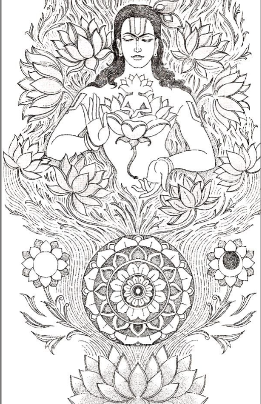
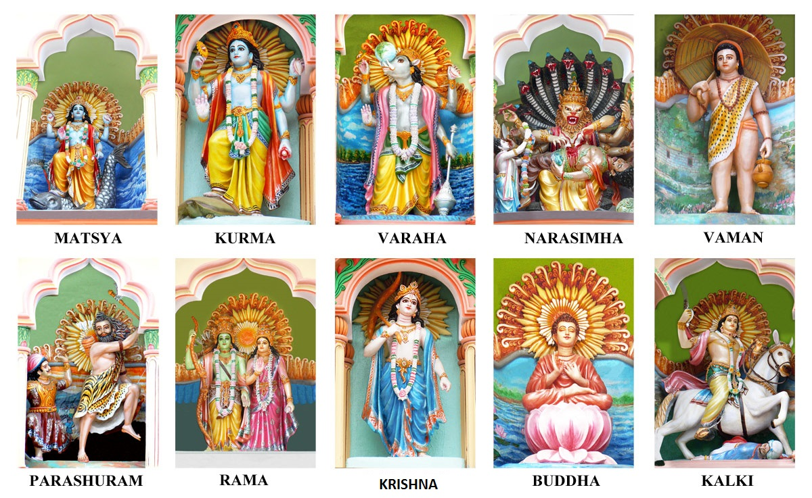

HOME
This page consists of basic information about the three dynamic deities which should be known by the vieweres/readers. Please do acknowledge that the information available on this website is collected by a student. Enjoy your stay!
BRAHMA - THE CREATOR
Have you ever wondered how universe was made? Who created it and exactly how it all started?

In the beginning, there was nothing. Only the Parabrahman. It was the supreme principle that had no beginning and no end. The absolute reality that was utterly indescribable. The divine essence with infinite potential. The cause and the effect blended into one. Timeless. Boundless. Self-created and self-contained. It had no form, nor was it formless. It had no traits, nor was it without any. Pure consciousness beyond the reach of thoughts and senses, A catalyst that was unchanging,yet it would bring forth every change. It was only when the Parabrahman willed it, that creation of the material universe began.
A universe that would now be manifest. Observable. Discoverable. Distinguishable. This will of the Parabrahman produced a vibration which birthed the first sound, and it was Om. The sound that contained all the sounds. And the first to form was the Maha Tattva, or the primordial element from which originated the three gunas or the three attributes. Sattva Guna denoting preservation, Rajas Guna denoting action and Tamas Guna denoting destruction. The interplay of these three gunas brought forth the Pancha Tattva, or the five physical elements. Air. Water. Earth. Fire. Ether.Together, they made Prakriti, or nature, manifest. The gunas also gave rise to the five senses. Sight. Hearing. Touch. Smell. Taste. These would be determined by five sense organs which would be governed by the mind. With matter had come forth perception. Water now flowed and covered everything. Water, water everywhere, but nothing that would sink. The Parabrahman manifested itself as a divine entity who lay on these waters like a lily pad over a pond. Since water is 'nara' and abode is 'ayana', this entity acquired his name. Narayana.
The Parabrahman now implanted its own seed in the water. Thus fertilised, the water nurtured the seed and, in due course, generated an egg. A golden egg that shone like an orb of light. Since this egg, or anda, had been spawned by the Parabrahman, it came to be known as Brahmanda. The cosmos. Narayana now entered the egg as Vishnu. The All-Pervading One. The Preserver, presiding over Sattva Guna. As this golden egg, or hiranya, enveloped him like a womb, or garbha, it acquired the name Hiranyagarbha.
A lotus with fourteen petals sprouted through Vishnu's navel(reference picture is on the left), and out of this flower emerged Brahma. Another divine manifestation of the Parabrahman. The Creator, presiding over Rajas Guna. The progenitor bore a kamandala, or water bowl, and a mala, or rosary. Born thus of a lotus from the navel, he got other names, like Padmayoni and Nabhija.
After spending a year inside the Hiranyagarbha, like a pearl gestating in an oyster, Brahma split the egg into two. The upper half became heaven and the lower half, earth. Between the two stretched the sky. Brahma had begun the cycle and he knew how it would eventually end. Creation, or sarga, would lead to preservation, or sthiti and finally give way to dissolution, or pralay. But as soon as one cycle would die, a new one would be born. At the end of every cycle, when all would be reduced to the primeval ocean of chaos, he would initiate this process all over again.
An eternal sequence of cycles. A universe of interlocked circles. Like a firework exploding in a dark sky, Brahmanda had come into being, Brahma sat gazing at what he had just created. Then he entered a state of meditation and from his depths originated the four Vedas. Rig Veda, Yajur Veda, Sama Veda and Atharva Veda. Little did the Creator know that four troubles were also about to rear their heads. Four troubles that would now endanger this very course of creation. Would well-begun be half-done?
(This is to only give a brief infomation about the deities, if you are interested to learn more then please head to book recommendations tab.)
VISHNU - THE PRESERVER

Vishnu is one of the most important gods in the Hindu pantheon.Vishnu is the Preserver and guardian of men, he protects the order of things (dharma), and he appears on earth in various incarnations (avatars) to fight demons and to maintain cosmic harmony.
Vishnu is the most important god of Vaishnavism, the largest Hindu sect. Indeed, to illustrate Vishnu's superior status, Brahma is, in some accounts, considered to have been born from a lotus flower which grew from Vishnu's naval. Vishnu was married to Lakshmi (the goddess of good fortune). However, unable to live with the quarrels between his three wives, Vishnu eventually sent Ganga to Shiva and Sarawati to Brahma. In some accounts, another wife of Vishnu's is Bhumi-Devi (goddess of the Earth). He is considered to live in the city of Vaikuntha on Mt. Meru, where everything is made of shining gold and fabulous jewels and where there are lakes resplendent with lotus flowers.
The 10 Avatars of Vishnu
Vishnu has ten avatars or worldly appearances, which are people, animals or a mix of both. Vishnu's ten avatars are (take the reference from the pic on right.) :
-Buddha
-Krishna (the hero)
-Rama (the hero)
-Parashurama (the hero)
-Nara-Simha or Narasimba (the man-lion)
-Vamana (the dwarf)
-Matsya (the fish)
-Kurma (the tortoise)
-Varaha (the boar)
-Kalki (who will appear when the world ends, riding a white horse and heralding the start of a new golden age)